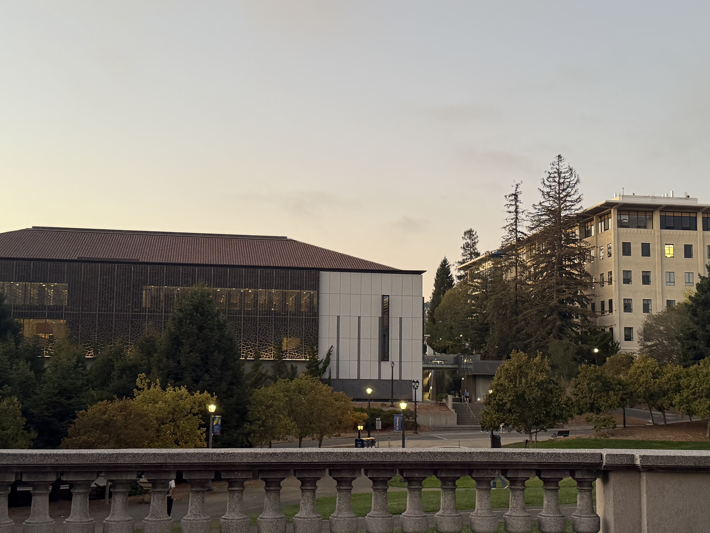
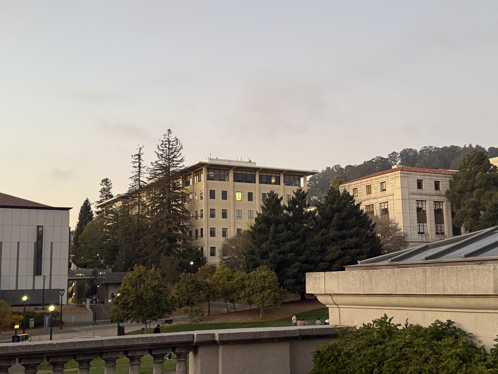
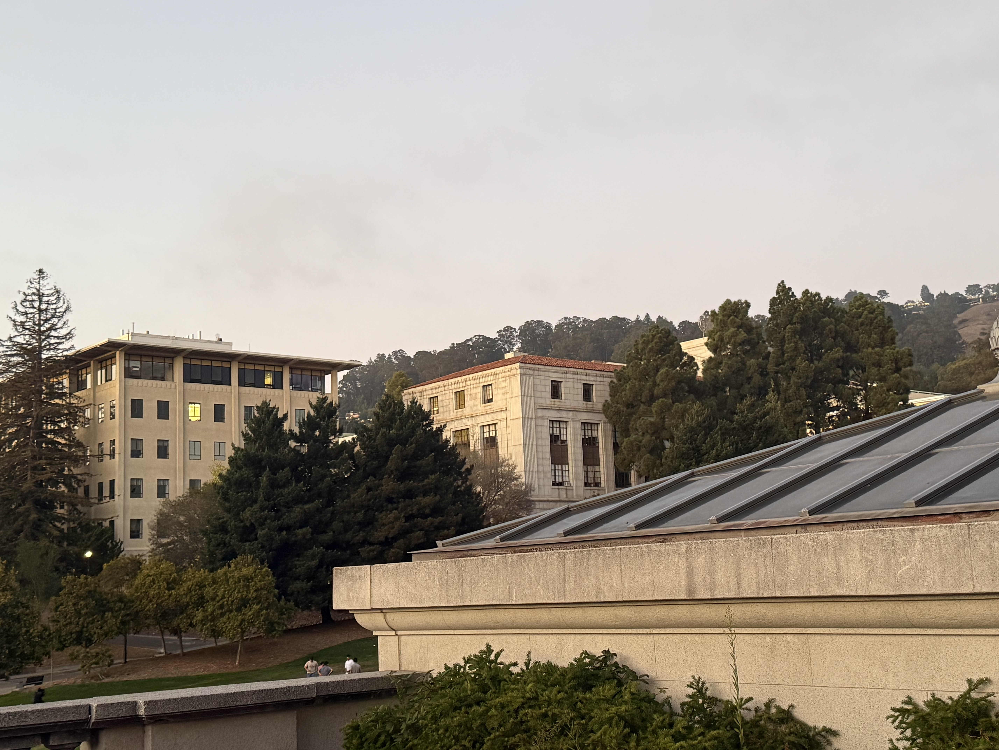
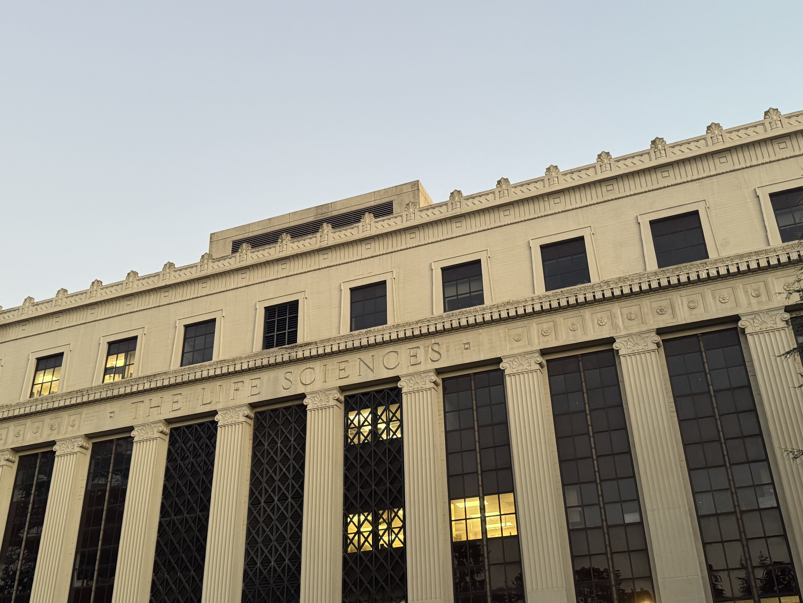
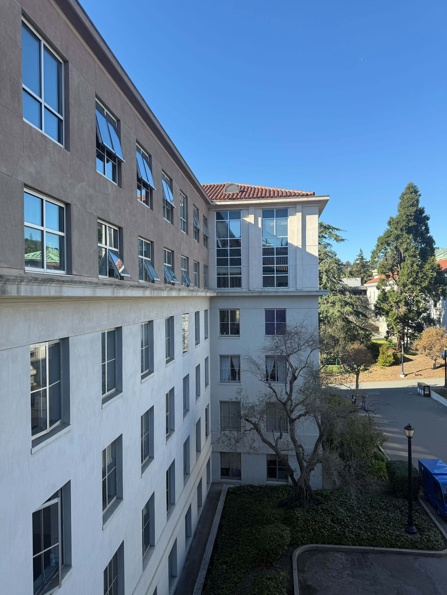
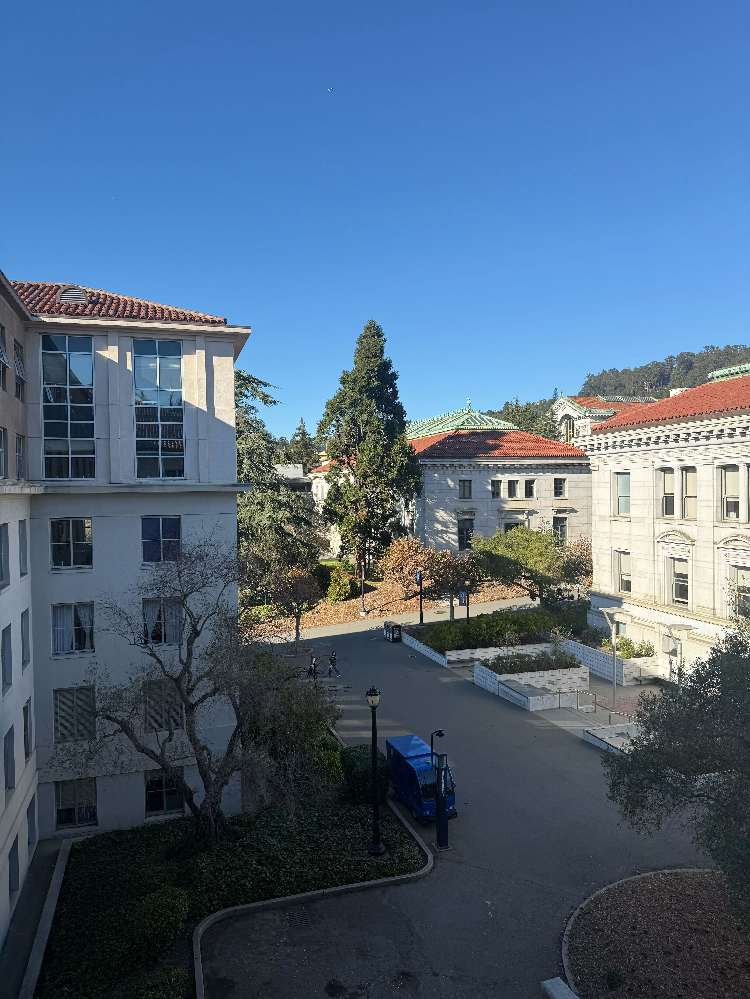
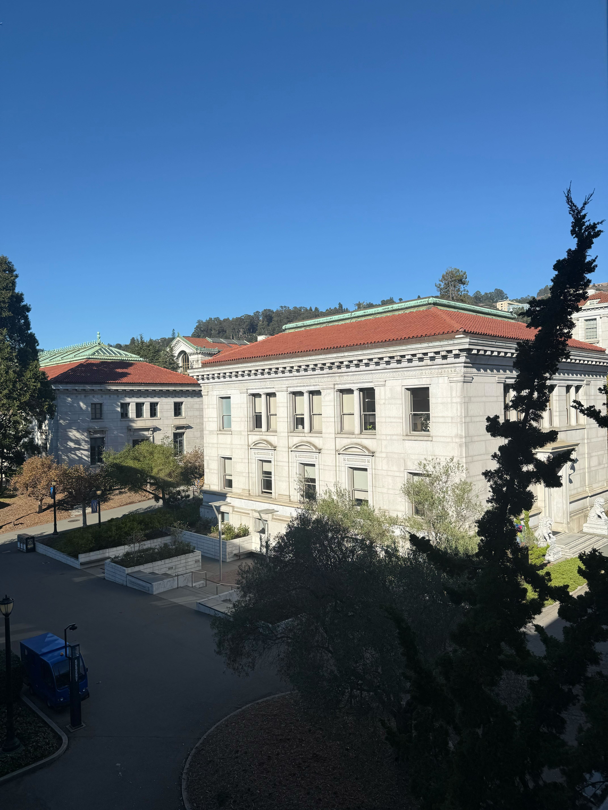

CS 180 Fall 2025
Project 3: (Auto)stitching and Photo Mosaics
This project explores image warping and homography-based transformations to create seamless image mosaics. We implement homography computation for perspective transformations, create image rectification for correcting distorted quadrilaterals, perform image warping with different interpolation methods, and build seamless image mosaics by blending multiple photographs together using homographies and alpha-aware blending techniques.
The second part of the project deals with automating this process, using Harris corner detection, feature descriptor extraction, feature matching, and RANSAC to find the best homography matrix H. We use these homography matrices to stitch images together into a mosaic similar to the first part.
Part A.1: Shoot the Pictures
We shoot multiple sets of photographs from three different angles, making sure to fix the center of projection (COP) while rotating the camera while capturing photos.
|

|

|

|

|

|

|
|

|

|

|
Part A.2: Recover Homographies
Here, we recover the homography matrix from the point correspondences between the two images. First, we visualize the point correspondences between the two images. Then, using our computeH function, we recover the homography matrix. The exact equations are also shown below.
For each correspondence (xi, yi) → (x'i, y'i), we get two equations from the homography transformation:
h11xi + h12yi + h13 - h31xix'i - h32yix'i = x'i
h21xi + h22yi + h23 - h31xiy'i - h32yiy'i = y'i
Rearranging these equations and substituting h33 = 1, along with our known values of (xi, yi) and (x'i, y'i), we get the linear system Ah = b where h = [h11, h12, h13, h21, h22, h23, h31, h32]T. For n point correspondences, this is a system of 2n equations and 8 unknowns. This overdetermined system is solved using least squares to find the optimal homography matrix H. For the above two images, we get the following homography matrix:
Part A.3: Warp the Images
Now that we have recovered the homography, we can warp the images using two different interpolation methods: Nearest Neighbor and Bilinear interpolation. Comparing the two by zooming in, we see that bilinear interpolation is more accurate and smoother. However, it is also more computationally expensive and was a little slower than nearest neighbor interpolation when generating these images.
We also demonstrate image rectification by correcting perspective distortion in rectangular objects. For this examples, we use tiles on a floor and a panel on a wall, which we know are squares. We compute the homography matrix H using the point correspondences between the original images and arbitrary square coordinates, and then apply the homographies to warp the images.
Part A.4: Blend the Images into a Mosaic
We blend the images into a mosaic by fixing a central image and then computing the homography matrix H using the point correspondences between the original images and the target image. We then apply the homography to warp the images and blend them using alpha blending. The images were downscaled before blending to speed up the process.
When using alpha blending, my initial images did not have an alpha channel, so I had to create one using the create_alpha_channel function. This function creates an alpha channel based on the brightness of the image, where brighter regions have higher alpha values and darker regions have lower alpha values. These masks were warped with the original images, and then the images were blended based on the alpha channel.
Part B.1: Harris Corner Detection
We use the Harris corner detection algorithm to detect corners in the image using the provided code. The initial image has thousands of corners, so we also implement Adaptive Non-Maximal Suppression (ANMS) to select the best corners. This works by discarding corners that are not the maximum in a local neighborhood, based on a specified radius. This helps to drastically reduce the number of corners.
Part B.2: Feature Descriptor Extraction
Using our selected corners, we extract features by taking a 40x40 axis-aligned patch centered at each corner. We then blur this patch and sample every 5th pixel to create a 8x8 feature descriptor. Finally, we normalize the feature descriptor to have zero mean and unit variance. We visualize some of the features below.
Part B.3: Feature Matching
Now, given two sets of features from two images, we implement feature matching as described in the paper using the Lowe ratio test. We compute matches as the 1-NN, but use the ratio between the 1-NN and 2-NN distances to filter out potentially false matches. Finally, we keep only the bidirectional matches to ensure a 1-1 mapping.
Part B.4: RANSAC for Robust Homography
Using the matches from the previous step, we implement RANSAC as described in class to find the best homography matrix H. We use these homography matrices to stitch images together into a mosaic similar to Part A.4.
Comparing the manually and automatically generated mosaics, we expect (and see) that the automatically generated mosaics are better because they use more points and have more accurate mappings, resulting in more accurate homographies.